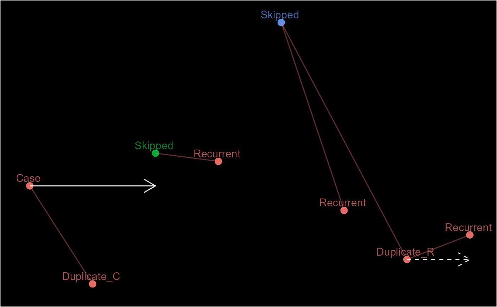
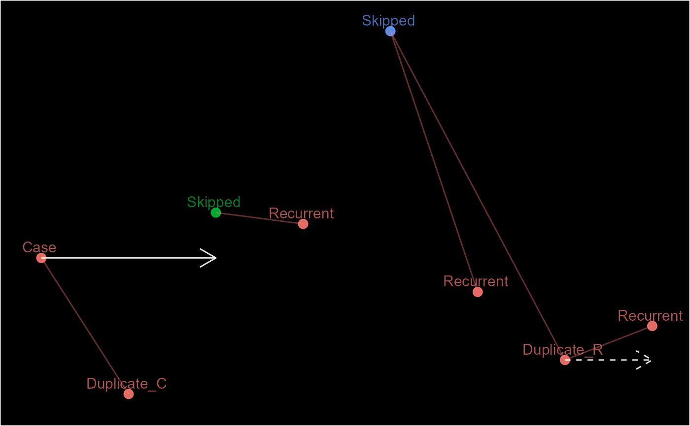

ep <- episodes(1:8)
unlinked_ep <- delink(ep, ep@sn %in% c(3, 8))
ep; unlinked_ep
#> [1] "E.1 (C)" "E.1 (D)" "E.1 (D)" "E.1 (D)" "E.1 (D)" "E.1 (D)" "E.1 (D)"
#> [8] "E.1 (D)"
#> [1] "E.1 (C)" "E.1 (D)" "E.3 (S)" "E.1 (D)" "E.1 (D)" "E.1 (D)" "E.1 (D)"
#> [8] "E.8 (S)"
pn <- partitions(1:8, length.out = 2, separate = TRUE)
#> Warning: `l` and `r` have different classes. They may need to be reconciled.
unlinked_pn <- delink(pn, pn@.Data == 5)
#> Warning: An index/reference record has been unlinked!
pn; unlinked_pn
#> [1] "PN.1 (I)" "PN.1 (D)" "PN.1 (D)" "PN.1 (D)" "PN.5 (I)" "PN.5 (D)" "PN.5 (D)"
#> [8] "PN.5 (D)"
#> [1] "PN.1 (I)" "PN.1 (D)" "PN.1 (D)" "PN.1 (D)" "PN.5 (S)" "PN.6 (S)" "PN.7 (S)"
#> [8] "PN.8 (S)"
pd <- links(list(c(1, 1, 1, NA, NA),
c(NA, NA, 2, 2, 2)))
unlinked_pd <- delink(pd, pd@pid_cri == 1)
#> Warning: An index/reference record has been unlinked!
pd; unlinked_pd
#> [1] "P.1 (CRI 001)" "P.1 (CRI 001)" "P.1 (CRI 001)" "P.1 (CRI 002)"
#> [5] "P.1 (CRI 002)"
#> [1] "P.1 (No hits)" "P.2 (No hits)" "P.3 (No hits)" "P.1 (CRI 002)"
#> [5] "P.1 (CRI 002)"
# A warning is given if an index record is unlinked as this will lead to seemly impossible links.
ep2 <- episodes(1:8, 2, episode_type = "rolling")
unlinked_ep2 <- delink(ep2, ep2@sn %in% c(3, 5))
#> Warning: An index/reference record has been unlinked!
schema(ep2, custom_label = decode(ep2@case_nm), seed = 2)
 schema(unlinked_ep2, custom_label = decode(unlinked_ep2@case_nm), seed = 2)

schema(unlinked_ep2, custom_label = decode(unlinked_ep2@case_nm), seed = 2)
